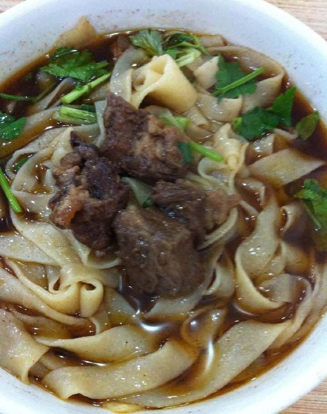
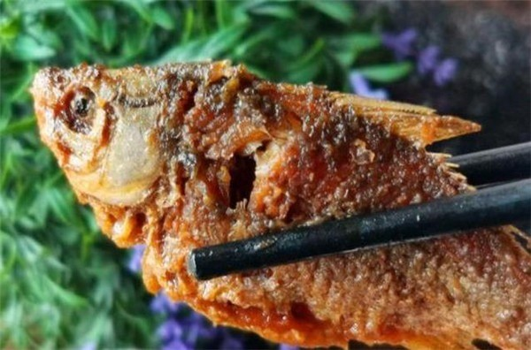
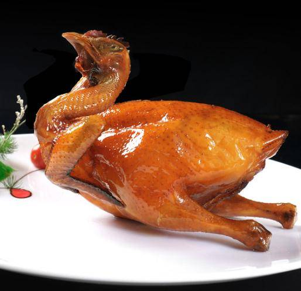
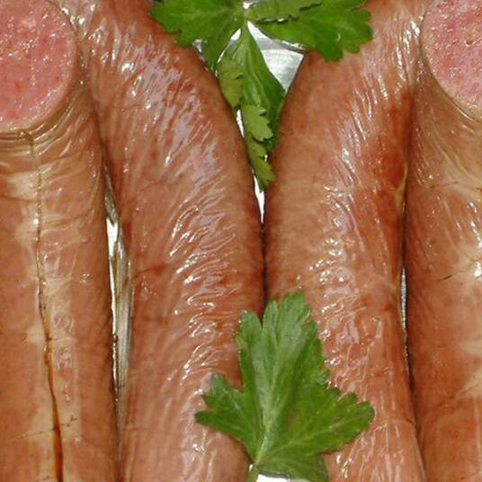

美食
有一说一这个没必要分那么细了（因为我自己也不知道）
郭八火烧是河北省大名县传统名吃。创业人郭致忠，大名县西大韩道村人。
郭致忠曾在北京(原顺天府)学艺，清光绪二十一年(1895)年回到大名，在县城开业，经营火烧。因他从顺天府学艺而来，堂号首取“天”字，并希望买卖兴隆，又取“兴”字，故立店铺“天兴火烧铺”。郭致忠小名叫“郭八”，因此，当地人便把他经营的火烧铺叫作“郭八火烧铺”了。
郭八火烧作料齐全，制作精细，风味独特，层多且薄，每张上有二十五层至三十层，外表金黄油亮，呈现石榴籽状，吃起来皮酥里筋，焦香可口，味香诱人。郭致忠后来将手艺传给儿子郭瑞，郭瑞又传给儿子郭殿臣。由郭殿蔬继承祖艺，经营了“天兴火烧铺”。由于“郭八火烧”享有盛名，所以生意兴隆，经济效益十分可观。人民生活越来越高，食用“郭八火烧”的人越来越多，特别是摆宴待客时，都少不了“郭八火烧”作为主食。
一九六五年李先念主席视察大名时品尝了“郭八火烧”， 一九六六年春，周恩来总理来大名视察时，也品尝了“郭八火烧”，并且亲自接见了郭瑞同志，高度赞扬了他打火烧的技艺，并且风趣地说：“老郭，你打的火烧真不错！我吃了一个半，谢谢你。”
拽面是一道传统的特色面食小吃。流行于冀南豫北一带，以武安拽面最为有名。盐水的浓淡和面的弹性有很大关系，咸拉弹性更大，吃得滑口，高血压者禁忌。拽面选用上好的面粉，用加了适量咸盐的水和面，面要软硬适度，再在面盆内用拳头蘸水揣面，直至面、盆、手三光方可。接下来的是绕面，双手把和好的面抻直上下晃动，再一抡两头一合，面就如雪白的麻花一样扭在一起，如此多次，绕好的面就十分地富有弹性和劲道。绕好的面再放入面盆里稍微醒一醒。老拽面好吃不好吃，劲道不劲道，关键就在这几步。再就是擀面、拽面、煮面，捞出来吃面。
骨酥鱼是河北省传统名菜，骨酥刺烂，鱼肉香鲜。作为中国的骨酥鱼祖，最早起源于中国骨酥鱼之乡河北省邯郸市，魏晋时期，由民间传入宫中，北宋被太祖颁旨御封，从此被尊称圣旨骨酥鱼。从两宋到明清，各部大人都以能吃上一回此鱼为至高荣耀。经过数百年的发展，骨酥鱼以邯郸市为中心，逐渐扩散到周边县市，制作天然正宗的骨酥鱼，磁州窑特产砂锅、料窨工艺和核心配方，三者缺一不可。
二毛烧鸡原名珍积成烧鸡，是河北省邯郸市的传统名菜，中华老字号之一，属于冀菜系。此菜被载入国家级史册《辞海》“八大地方风味美食”大名“二五八”之首，邯郸十大名小吃。是大名县传统的名贵食品，长期以来远近闻名，享有盛誉。
由王德兴创始于清朝-仁宗嘉庆十四年（1809年）直隶大名府（今河北大名县城内）因乳名“二毛”及在煮烧鸡的锅里放有二个石猫所以故里乡亲称颂“二毛烧鸡”。据传，清朝道光年间，新任府尹上任路过店前，闻香落轿，品鸡问其名，随口吟诗曰：夸官逍遥道，闻香品佳肴。适逢设盛宴，吾必备“二毛”。从此“二毛烧鸡”更是誉满全城，并留下了“一锅烧鸡满城香”的美誉，名扬在外。
近几年来以第四代传人王宪维为首的王氏家族经营者们把“二毛烧鸡”与“珍积成烧鸡”同时做为门面的招牌。“二毛”这个流传百世的名字，不但在清朝就名扬中原大地，而且在改革开放的今天也是在大江南北，海内外早已广为人知的烧鸡楷模。
当时百姓有一首流传歌谣：“想吃鸡得跑快腿，吃了以后得捂住嘴，顶风无腥味，顺风鼻子眼里冒香气”。出名的诀窍在哪？是制作传统秘方的艺求，出类拔萃的味道，促使了“二毛烧鸡”在社会上形成了“闻着不想走，看见了想吃到口，孝顺人，想给老人买只走，义气人，在朋友场上想托着烧鸡露一手”。
驴肉香肠是一道色香味俱全的传统名吃，产自河北省邯郸市永年区，在河北省邢台市沙河市和邯郸市都广泛喜爱的一个菜肴，隔几天就想吃一次，离不开的美味，是个凉菜，口感油油的厚实感，切片摆盘，有着特殊的香味，是在外的邯郸人和邢台人对家乡深深的思念和味觉记忆。源于清朝末年，已有近百年历史，是“中华传统名小吃”。 由驴肉辅以多种香料制成，香而不腻，营养丰富。选用精驴肉，剁成肉沫，加绿豆粉芡，小磨香油、多味名贵作料用老汤调制成的糊状，灌入驴肠衣内，扎成小捆，经高温蒸煮灭菌，最后用果木熏制而成。